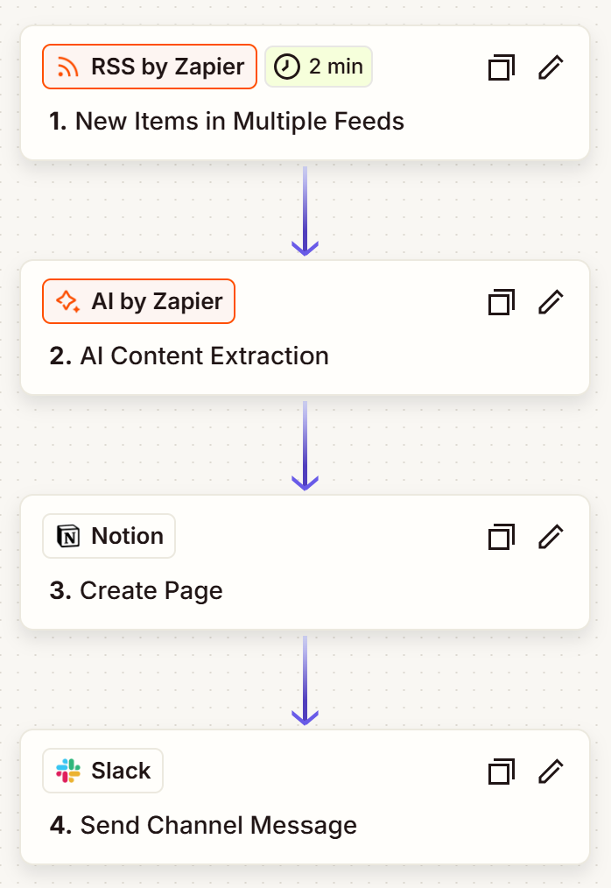
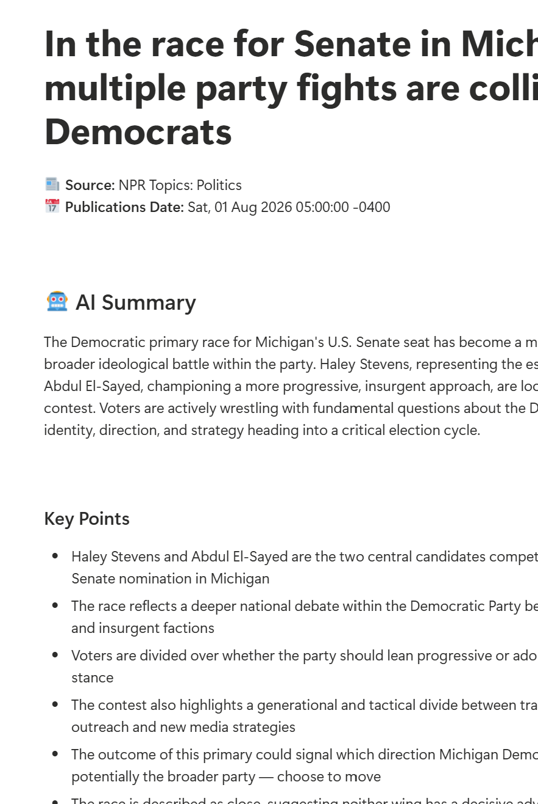
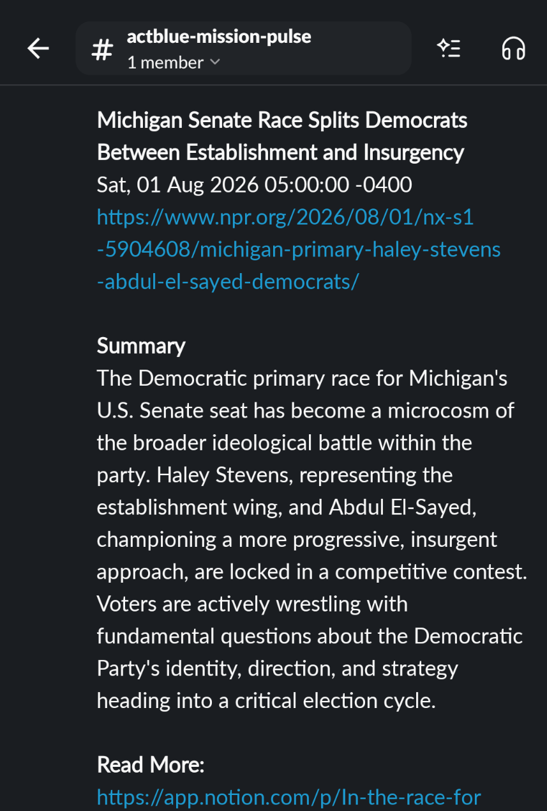

Here’s a proof of concept showcasing how I built an agentic AI workflow using Zapier to automate real-time news distribution and weekly summary newsletters, all within a cohesive ecosystem and aligned to organizational brand standards.

AI-augmented workflow using Zapier webhooks to automatically ingest news, parse and summarize content according to workflow requirements, and then call additional agents for formatting and distribution. Reduces manual effort and ensures consistent messaging across channels.

Intranet pages for individual stories, including AI summaries, organizational relevance, and direct links to source content and internal news platforms. Content is automatically formatted and explained in alignment with organizational brand standards, ensuring a consistent and professional appearance across all news items.

Dedicated Slack channels for each news category, allowing users to engage with bite-sized content in the flow of work, fine-tuned for their exact needs. Short summaries and direct intranet links ensure that users can scan relevant information at a glance before diving into all the details.